卍新纂大日本續藏經 第59冊
No.1084 瑜伽燄口註集纂要儀軌 (2卷)
【清 寂暹纂】
第 1 卷
閱大藏作陀羅尼法。須得五智灌頂。紹阿闍黎位。方可傳授。若不爾者。自招殃咎。此世尊授阿難之密囑耳。相傳既久。法臣成弊。後蓮大師去華就實。稽古考定。時流奇好。痛口訶責。今觀
巨澈上座之纂要。深得先哲之訓。以正季世之訛。可謂洞開古詻。枝蔓剪除。功補緇門。饒益有情者也。
歲在乙卯重陽前五日桃村無隱千峰立書。
瑜伽密教
釋迦說灋。有顯有密。顯通大小。密唯大乘。瑜伽本經。都十萬偈。有十八會。除十八會。餘經屬顯。今大藏中。佛說救拔燄口餓鬼陀羅尼經。是不空譯。佛說救面然餓鬼陀羅尼神呪經。實叉難陀譯。一經二譯。俱唯有變食真言。此經自屬顯教。不空又譯出瑜伽集要救阿難陀羅尼燄口儀軌經。復用密部大悲空智儀軌經云。瑜伽即相應義。謂一切乘境行果所有諸法。皆相應也。其密教相。如顯密圓通中說。施食緣起。如本經說。
壇儀
一切如來真實攝經說。大曼茶囉有五部。初佛部。毗盧遮那佛為部主。次金剛部。阿閦佛為部主。次寶部。寶生佛為部主。次蓮華部。阿彌陀佛為部主。次羯磨部。不空成就佛為部主。又五部各有四大品。一金剛界。二降三世。三徧調伏。四一切義成就。又四品中各建立六曼茶囉。所謂大曼茶囉。三昧耶曼茶囉。法曼茶囉。羯磨曼茶囉。四印曼茶囉。一印曼茶囉。今本壇儀。于五部中。屬蓮華部。于四大品。徧是調伏。千手千眼觀自在菩薩念誦儀軌。明四種壇法。所謂息災增益敬愛降伏。今是增益。出世悉地。梵語曼茶囉。或云曼荼囉等。有翻即壇義。準千手眼儀軌中。結纔發意轉法輪菩薩印云。以印置身前空中。即滿虗空界。成大曼茶囉。以印安于心上。即自身成大曼茶囉等。則知曼茶囉非止是壇義。後當再明。而本經儀軌名三昧耶壇者。即與弟子及鬼神授戒壇也。般若理趣釋中。梵語三昧耶含四義。第四義云。三昧耶亦為曼茶囉之異名。故六曼茶囉中。第二名三昧耶曼茶囉。其名義一也。金剛頂瑜伽略出念誦法。有畵像壇手印壇。此用手印壇也。手印壇亦名隨心壇。隨心變現故。千手眼觀自在菩薩十肘曼茶囉法門云。以曾入大會三曼拏囉金剛大道場者。不須作曼拏囉。唯結印誦呪。無願不果。大毗盧遮那成佛神變經本尊三昧品云。諸尊有三種身。所謂字印形相。其畵像法。必須作曼拏囉如法故。藏本集施食儀。人慮末世不能建畵像曼拏囉。亦恐不得金剛阿闍黎。故權用大輪明王呪印。與轉法輪呪印起首。深為有理。宜可準行。又曼拏疏云。夫為道者。析運為宗。上若不供諸佛菩薩。何處展智。欲求菩提。下若不濟諸仙餓鬼。何處行悲。以度薩埵。有信之流。無遺斯業。今本印現壇儀以前。是上供求菩提。啟告以後。是下濟度薩埵。
阿闍黎
(國師金剛智。乃西域人。親傳龍智阿闍黎法。唐開元七年來支那。所至結壇。作灌頂道場。即此土阿闍黎之始祖也)。
準瑜伽大教王經。乃是十地灌頂位菩薩。其次或是解行地菩薩。故最上大乘金剛大教寶王經。稱為金剛阿闍黎。燄口儀軌經云。若樂修行者。應從瑜伽阿闍黎學。發無上大菩提心。受三昧耶戒。入大曼拏囉。得灌頂者。然許受之。受大毗盧遮那如來五智灌頂。紹阿闍黎位。方可傳教也。若不爾者。遞相不許。設爾修行。自招殃咎。成盜法罪。終無功效。佛說持明藏儀軌經云。行人若欲修習諸成就法者。先須修習觀智。及諸印相。皆令精熟。毋使謬誤。于作法時。若稍疑誤。不成印契。即賢聖不喜。凡所祈求。不獲成就。
觀菩提心
守護國界主陀羅尼經云。謂觀此身體。成金剛堅固不壞。當以身作金剛結跏。以堅牢智。諦觀自心。以為月輪。當于鼻端。不令馳散。清淨圓滿。色如凝雪牛乳水精。而此月輪為菩提心。此菩提心本無色相。為未成就諸眾生故。說如月輪。妙法蓮華經王儀軌云。推求自心。乃至不可得。則能悟入人空智法空智。即于此無所得心。觀于圓明。淨無塵翳。如秋滿月。炳現于身。仰于心王。則此是本源清淨大圓鏡智。佛說瑜伽大教王經觀想菩提心大智品。佛言此菩提心即是身相。身相性空即真菩提。身既無別。語相亦然。毗盧遮那儀軌云。先證一道清淨。次證菩提心。菩提心釋云。菩提心離一切性非五蘊。乃至自既覺悟菩提心。如實觀己。然後發大悲心。令諸眾生于自心法。如實證覺。如是名為一切根本最上菩提心。
字種
阿闍黎觀想三十七尊字種。具如佛說瑜伽大教王經佛說一切如來真實攝現證三昧經。調伏一切世間大曼拏囉儀軌云。爾時大毗遮那如來。即入一切如來金剛法三昧。出生加持蓮花三摩地。說此一切如來法三昧。即一切如來心從自心出。說是心明曰[口*紇]哩。說是心明時。從一切如來心。出現蓮花相。有無數色殊妙光明。其光旋復。從聖觀自在菩薩摩訶薩心。入[口*紇]哩字。具四字義。成一字真言。如密呪圓因集說。十八會指歸云。于月輪上。有旋列真言字。住心于一一字。實相理相應。用而復始。
手印
準金剛頂略出念誦法。右手配止。左手配觀。十指配度。右手施戒忍進禪。左手慧方願力智。蓋西域當陽向東。以右尊左卑故也。如意輪蓮華心儀軌亦同。瑜伽大教王經云。爾時大徧照如來。即釋迦佛變相。告金剛手菩薩言。三金剛大智所生秘密印相法。若持誦者。依法結印。能滅一切罪業。復能觀想真理。即得證于無上菩提。何況別求成就之事。乃至依此菩提心。想為月輪。於月輪上。想有唵字。為身金剛。次想啊字。成語金剛。吽字成心金剛。故凡結印。先當想此三梵書字。今手印圖上。皆有唵啊吽三梵書者。即是用經義也。又云。一切印從金剛掌金剛拳金剛縛生起。
旹
康熈十四年。歲在乙卯。孟秋自恣前三日。淨業比丘寂暹巨徹氏。熏沐敬書於楞嚴般若堂。
瑜伽燄口儀軌(終)
No. 1084-2
瑜伽燄口註集纂要儀軌卷上
吉祥會啟甘露門開。孤魂佛子降臨來。聞法赴香齋。逈脫輪回。幽暗一時開。
∴雲來集
此香不從天降。豈屬地生。兩儀未判之先。根源充塞三界。一氣纔分之後。枝葉徧滿十方。超日月之光華。奪山川之秀麗。即戒即定即慧。非木非火非烟。收來在一微塵。散處普熏法界。爇向罏中。耑伸供養
常住三寶。剎海萬靈。歷代祖師。一切聖眾。河沙品類。幽顯聖凡。悉仗真香。普同供養。
∴香雲盖
佛面猶如淨滿月 亦如千日放光明
圓光普照于十方 喜捨慈悲皆具足
南無盡虗空徧法界。過現未來佛法僧三寶。
∴登寶座
伏以登瑜伽顯密之座。六度齊修。開濟物利生之門。三檀等施。一心湛寂。全身總是大悲王。三業應兮。脫體俱成[口*紇]哩hrīḥ 字。果然如是。則是因是果。不出自心。自利利他。豈關餘物。化滴水。作長河之酥酪。變微食。為大地之斛食。于倏忽際。普濟法界之饑虗。在頃刻間。利益河沙之鬼趣。若也如斯會得。須當普利羣機。其或未然。不免重宣妙偈。所謂道。
塵塵剎 盡圓融 萬別千差一貫通
拈起珊瑚枝上月 光輝烱烱照無窮
南無大悲觀世音菩薩(眾和畢上師祝水文)。
夫此水者。八功德水自天真。先洗眾生業垢塵。徧入毗盧華藏界。箇中無處不超淪。水不洗水。玅極法身。塵不染塵。返作自己。蠲除器界。蕩滌壇場。灑枯木而再逢春。潔穢邦而成淨土。所謂道。內外中間無濁穢。聖凡幽顯總清凉。教有密言。今當持誦(大眾同聲誦大悲神呪畢表白舉)。
∴甘露王
(三遍 侍者白云何梵)。
∴淨法界真言
(誦真言時。調伏身心。想頂臍兩處。具唵[口*藍]二字。令清淨故。以表福智圓滿)。
唵囕oṃ raṃ 莎訶
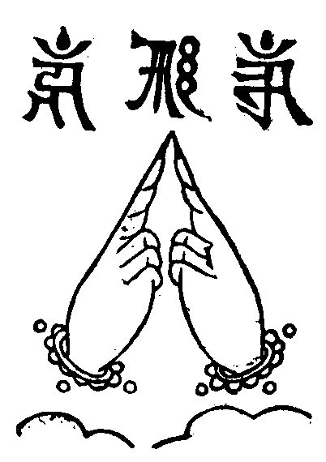
(成就妙法蓮華經王瑜伽觀智儀軌云。應結法界生印。二手各作金剛拳。舒二頭指側相拄。即成安印於頂。于其印中。想法界種子raṃ [嚂-皿+見]字。其色皓白。徧流光明。普照一切有情界。能破一切有情虗妄煩惱。當觀自身。及諸有情。同一法界。無二無別。大毗盧遮那成佛神變加持經第二卷中。法界真言曰。[口*藍]。瑜伽蓮花部念誦法云。當觀頂上有法界生字。放赤色光。所謂[口*藍]字。顯密圓通云。此梵書[口*藍]字。若想若誦。能令三業。悉皆清淨。一切罪障盡得消除。又能成辦一切勝事。隨所住處。悉得清淨。衣服不淨。便成淨衣。身不澡浴。便當澡浴。若用水作淨。不名真淨。用此法界心[口*藍]字淨之。即名畢竟清淨。譬如靈丹一粒。點鐵成金。真言一字。變染成淨。又大毗盧遮那成佛神變加持經第四卷中。有淨法界真言曰。南無三曼多勃駄南達麼馱睹薩嚩婆嚩句痕。大悲空智儀軌經云。佛說一切真言。句首當安唵字。次安吽癹吒字。後用莎賀字。若真言初以唵字。後加莎訶字。寂災用。初以唵字。後加[合*牛]癹字。攝召用。初後納麼。增益用。初後[合*牛]癹。降伏用)。
∴點淨真言
(誦真言時。用右手無名指。搵取香水。彈洒虗空。并塗掌。想壇場內外。悉令清淨)。
唵啞穆葛拶囉彌麻迎蘇嚕蘇嚕莎訶
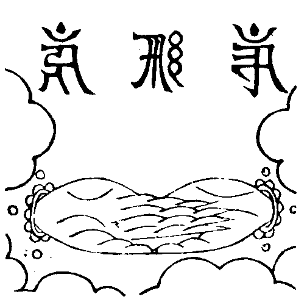
(此真言名。出不空罥索經。用右手無名指。搵取白檀香水。塗二手掌。甘露軍茶利儀軌云。修瑜伽者。不應執著外淨。當以勝義自性清淨法水。洗滌身心。如理相應。守護國界主陀羅尼經云。金剛結跏。端身正坐。左手仰掌。當于臍上。右手仰掌。重左手上。以大拇指令頭相拄。此印名為第一最勝三昧之印。能滅狂亂。一切妄念。令心一境。澄定身心。方入法界三昧)。
∴加持花米真言
(誦真言時。以手拈花米三次。想成光明種。出生金銀碧玉珍寶之雲)。
唵斡資囉(二合)[口*普]彌啞吽
(持明藏儀軌經云。用稻穀花。徧散其上。虗空藏菩薩問七佛陀羅尼經云。以三指撮米花而呪之。此即花米之因也。將欲應用。表顯諸法。故加持之)。
∴加持鈴杵真言
(誦真言時。手拈花米。洒在鈴杵上。想成智慧種)。
唵斡資囉(二合)薩答啞吽
唵斡資囉(二合)看吒啞吽
(金剛頂蓮花部心儀軌云。次結振鈴印。右杵左振鈴心入聲解脫。觀照般若理。仁王護國般若波羅蜜多經道場念誦儀軌云。東方金剛手菩薩。手執金剛杵。表起正智。猶如金剛。能斷我法。微細障故。北方金剛藥义菩薩。手持金剛鈴。鈴音振擊。覺悟有情。以表般若。警羣迷故。諸部要目引經云。不持金剛杵。無由得成就。金剛杵者。菩提心義。能壞斷二邊。契中道)。
唵(一)(引)啞(二)(引)吽(三)(引)
(大教王經云。唵字是大徧照如來。啊字是無量壽如來。吽字是阿閦如來。佛說大悲空智大教王儀軌云。唵啞吽三字。名加持真言。成佛儀軌云。由誦此唵字。加持威力故。縱觀想不成。于諸佛海會。諸供養雲海。真實真成就。由諸佛誠諦法爾所成故。由適誦啊字。摧滅諸罪障。獲諸悅意樂。等同一切佛。超勝諸魔羅。不能為障礙。應受諸世間。廣大之供養。由吽字加持。虎狼諸毒虫。惡心人非人。盡無能陵屈。如來初成佛。于菩提樹下。以此印密言。摧壞天魔眾。分一二三。并引字。準密。呪圓因集)。
降魔偈
(持杵振鈴誦)。
∴此乃一切諸如來 手中執持金剛杵
金剛佛母大勇識 我亦恒常而執持
∴願滅有情大愚癡 唵賀囉賀囉吽(三遍)
∴左手執持微妙七寶鐸 洪音振動十方及三際
梵音嘹喨驚覺魔冤心 摧碎邪妖魍魎諸鬼魅
∴右手執持金剛降魔杵 威勢力重八萬四千觔
摧壞天與非天魔眷屬 普使回光返照而渴仰
∴內外冤魔三毒四害等 呪咀魘禱波旬及外道
三尖火輪遣魔變空力 能使顛倒夢想皆遠離
∴四方八面忿怒諸天魔 聞我作法諦聽而信受
唧[口*亡]叭怛秘密妙伽陀 彈指掃蕩兇惡及禍崇
十二因緣呪
唵耶答兒麻(二合)兮都不囉(二合)巴斡兮敦的山答塔葛答歇斡怛的山拶約尼嚕怛耶[口*邦]叭諦麻曷釋囉(二合)麻納耶莎訶
(密呪圓因徃生集中。準經翻譯。即為頌曰。諸法從緣起。如來說是因。彼法因緣盡。是大沙門說此呪兩用。今始開壇。是緣起義)。
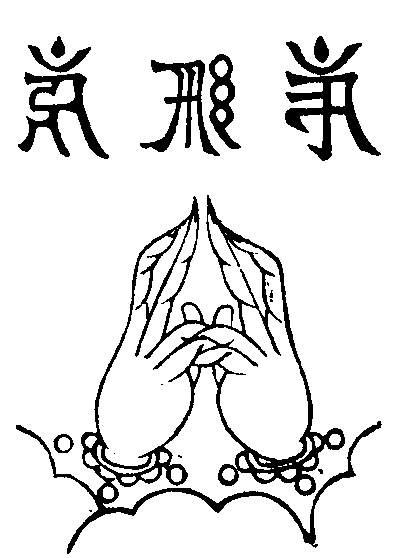
加持灌頂真言
∴稽首皈依蘇悉帝 頭面頂禮七俱胝
我今稱讚大準提 惟願慈悲垂加護
南無薩哆喃三藐三菩陀俱胝喃怛姪他唵折[棣-木+(上/矢)]主[棣-木+(上/矢)]準提莎訶
我及法界。一切有情。從今為始。乃至未證菩提之間。誓願皈依
金剛上師三寶。
∴上師三寶真言
(手持花米上舉而誦)。
捺謨孤嚕(二合)毗耶(二合) 捺謨勃塔耶
捺謨達而麻耶 捺謨桑渴耶
唵哩哩哈哈吽吽癹怛
唵失哩麻哈歌羅哈哈吽吽癹怛莎訶
唵(一)(引)啞(二)(引)吽(三)(引)(將手持的花米。散洒虗空。想所落寶米。悉成花香諸供養等雲)
(準瑜伽大教王經。上師。即金剛阿闍黎。經云。此阿闍黎。即是我等諸佛父母。及為我等諸佛之師云云。此金剛阿闍黎。即金剛手秘密主。亦即毗盧遮那。故為釋迦等師。毗盧遮那。及四如來。即佛寶。金剛一乘甚深教。即法寶。金剛菩薩等。即僧寶。此上師三寶。屬受用土報身佛等。非變化土釋迦佛等。即中圍佛會也。總持教中說。三十七尊。皆是毗盧一佛所現。謂毗盧遮那如來。內心證自受用。成于五智。從四智流出四如來。大圓鏡智。流出東方阿閦如來。平等性智。流出南方寶生如來。妙觀察智。流出西方無量壽如來。成所作智。流出北方不空成就如來。法界清淨智。即自當毗盧遮那如來。言三十七者。五方如來。各有四大菩薩在于左右。中央毗盧遮那如來四菩薩者。一金剛波羅蜜菩薩。二寶波羅蜜菩薩。三法波羅蜜菩薩。四羯磨波羅蜜菩薩。東方阿閦如來四菩薩者。一金剛薩埵菩薩。二金剛王菩薩。三金剛愛菩薩。四金剛善哉菩薩。南方寶生如來四菩薩者。一金剛寶。二金剛威光。三金剛幢。四金剛笑。西方無量壽如來四菩薩者。一金剛法。二金剛劍。三金剛因。四金剛利。北方不空成就如來四菩薩者。一金剛業。二金剛法。三金剛藥义。四金剛拳。已有二十五。及四攝八供養。故成三十七。言四攝者。即鈎索鎖鈴。八供養者。即燒散燈塗花縵歌舞。皆上有金剛。下有菩薩。然此三十七尊。各有種子。皆是本師智用流出)。
自性偈
∴方便自性不壞體 金剛不壞大勇識
最勝無比超出相 今此所作皆成就
∴勝慧自性甚深性 演說最上法輪音
以無生現方便身 今此所作願得成
(淨印法門經云。佛言以我自性。即菩提場自性。而菩提場自性。即一切眾生自性。彼一切眾生自性。即一切法自性。大智度論云。如金剛山。從上穿下。至金剛際自性便止。一切金剛。皆金剛輪而為自性。又金剛座亦從金剛際自性而起。佛說大悲空智儀軌經云。佛告金剛藏菩薩。空智者。謂大悲空智。金剛者。體即勝惠。以勝惠方便成就儀軌。乃至生住因緣。以識智成辦。又云。以智慧方便自性。出生諸法。又云。金剛渴椿誐杖者。表智慧相。奎樓鼓者即善方便)。
淨地偈
∴一切方隅所有地 瓦礫砂磧等皆無
瑠璃寶地平如掌 柔軟微玅願安住
∴猶如極樂國莊嚴 妙寶為地眾花敷
園林池沼無缺少 以大法音願具足
∴從出世間復能現 種種七寶之所成
無量光明徧照處 諸佛菩薩願安住
(此中雖屬手印壇。然作法一準畵像曼拏囉。故須念淨地偈。尋諸部建壇儀。則如此渴義)。
音樂呪
唵斡資囉(二合)看支夷囉納(二合)囉納(二合)不囉(二合)囉納不囉(二合)囉納三不囉(二合)囉納三不囉(二合)囉納薩哩斡(二合)勃塔赤的囉(二合)不囉拶哩答麻曷不囉(二合)尼牙(二合)巴囉蔑答那達速巴微薩哩斡(二合)塔哩麻(二合)[口*紇]哩(二合)達耶傘多沙納葛哩吽吽癹吒莎訶
緣起文
切以法不孤起。仗境方生。道不虗行。遇緣即應。今則羅列華壇。闡揚佛事。香焚寶篆。騰五色之雲霞。燭綻金蓮。燦一天之星斗。法樂奏無生之曲。梵音演最上之宗。歸依五眼六通。迎請千賢萬聖。由是覺王住世。以法利生。不有因緣。無由垂範。是以阿難尊者。林間習定。夜是鬼王。口吐火燄。頂髮烟生。身形醜惡。肢節如破車之聲。譏火交然。烟喉似針鋒之細。見斯恠異。問是何名。答曰面然。汝三日之中。當墮我類。阿難驚怖。歸投大覺慈尊。敘說前因。啟請救苦之法。佛垂方便。利濟洪深。使延年而益筭。誦威德之真詮。令餓鬼以充資。施甘露之法食。加持必專于神呪。嚴衛須假於壇儀。雖然啟請一時。法傳千古。金山修建。不燭自明。摩伽斛食。施周法界若無靈騐。今古焉傳。有是功勳。方堪演說梵音演處。上窮有頂之天。唐韻宣時。下極風輪之際。欲明聖理。故白斯文。佛事完成。同歸真際。所謂道。
最勝光明自在王 如來宣演妙難量
昔因慶喜生惶怖 燄口雷音報禍殃
稽首慇懃白教主 興慈濟物利生方
如今稽古重拈出 凡聖同遊解脫場
唵斡資囉(二合)麻明啞吽
(用右手無名指。點取香水。彈洒曼丹。此曼丹作法成後。即名曼拏囉。洒水誦呪。亦加持義)。
唵斡資囉(二合)烏怛葛啞吽
(仍用右手無名指。點取香水于曼丹上。右旋作一圓相佛說大教王經明畵像壇儀云。時阿閻黎于曼拏囉地中間。以塗香作圓相。曼拏囉今手印壇亦準經義。故以香水于曼丹上作此圓相。表曼拏囉也。佛說秘密相經云。當念誦時。應觀心月曼拏囉相。則知作此圓相有二義。一則以事顯法。二乃觀想唯心。曼拏囉也。般若波羅密多理趣釋云。以事顯于理。故即事即理。理事不相礙故)。
(就念真言一遍。作圓相一匝。次加持花米。成光明種。如用之時。悉成如意珍寶供具)。
唵斡資囉(二合)[口*普]彌啞吽
(念真言時。手持花米。右旋洒散曼丹。如空注雨)。
輪圍山 鐵圍山
唵斡資囉(二合)哩契啞吽
(佛說金剛手菩薩。降伏一切部多大教王經云。告大部多主無能勝言。所有四大洲界。閻浮提內一切眾生。作法誦持。悉令成就。今此亦用四洲為限。是故加持。唱此二山為地界)。
金剛地勝金剛地基吽hūṃ 字而作擁護(佛說大教王經云。復想曼拏囉地。即成金剛地。徧滿熾盛。時阿闍黎即稱己名。同誦吽字。大樂金剛不空理趣釋下卷云。hūṃ 字者。是因義。即一切如來菩提心。亦是一切如來不共真如妙體。恒沙功德。皆從此生)。
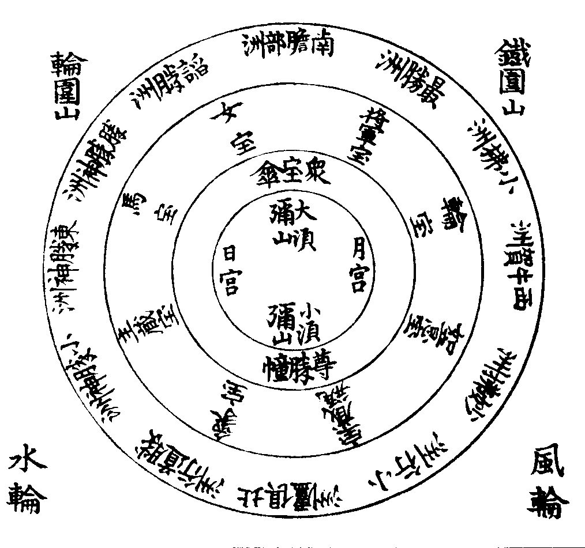
南北東西四部洲 百千剎土亦能酬
須彌頂上安宮殿 大地孤魂脫苦坵
唵唅彌囉微捺麻(大須彌山)
唵唅斯克徹(二合)麻彌囉微捺麻(小須彌山)
唵巖晡兒斡(二合)微的葛耶捺麻(東勝神洲)
唵巖的葛耶捺麻(小勝神洲)
唵巖微的葛耶捺麻(勝勝神洲)
唵囕咱晡的癹耶捺麻(南贍部洲)
唵囕沙茶耶捺麻(諂勝洲)
唵囕烏答囉曼的哩(二合)尼耶捺麻(最勝洲)
唵[口*藍]啞咓囉孤答(二合)尼耶捺麻(西牛賀洲)
唵[口*藍]拶(二合)麻囉耶捺麻(小拂洲)
唵[口*藍]斡囉拶(二合)麻囉耶捺麻(妙拂洲)
唵鑁烏答囉孤囉尼捺麻(北俱盧州)
唵鑁孤囉微捺麻(小行洲)
∴唵鑁葛囉斡(二合)耶捺麻(勝道行洲)
唵巖葛拶囉的捺(二合)耶捺麻(象寶)
唵囕[口*普]嚕沙囉唽的捺(二合)耶捺麻(主藏寶)
唵囕斡節囉的捺(二合)耶捺麻(馬寶)
唵鑁斯的哩(二合)囉的捺(二合)耶捺麻(女寶)
唵巖葛吒葛(二合)囉的捺(二合)耶捺麻(將軍寶)
唵囕吒吃囉(二合)囉的捺(二合)耶捺麻(輪寶)
唵囕麻尼囉的捺(二合)耶捺麻(如意寶)
∴唵鑁麻曷聶塔捺耶捺麻(寶藏瓶)
唵啞斯哩(二合)牙耶捺麻(日宮)
唵[口*藍]拶的囉耶捺麻(月宮)
唵啞吽捺麻(眾寶傘)
∴唵薩哩斡(二合)囉的尼(二合)毗藥捺麻(尊勝幢)
唵室哩(二合)麻忒(二合)斡資囉(二合)孤嚕拶囉捺葛麻辣耶三藐克答捺啞斡癹薩拏葛囉(二合)耶吽捺麻
(大須彌。即四寶山小須彌。即七金山。象寶等。即佛說大乘莊嚴寶王經。金輪七寶經云。七寶現時。其地悉皆變成金色。寶藏缾。與七俱胝佛母所說準提經。七寶賢瓶義同。眾寶傘。即妙吉祥大教王經。五傘之一。尊勝幢。是高顯摧邪義。一字金輪王佛頂要略念誦法云。想曼拏囉中有香水大海。于海中心。有妙高山。七重金光。周匝圍繞。于妙高頂上。有八葉白色蓮花。於一一葉上。右旋布列輪王七寶。一切如來大秘密王未曾有最上微妙大曼拏囉經云。觀想四寶。金剛山上有吽字。名徧現最上大金剛寶峯。其上有大寶殿。以金剛寶柱等莊嚴。而彼殿中。有蓮花寶色如來於中而住。此名三昧曼拏囉。則知此中。亦應觀想妙高峯頂有大寶殿。上師三寶于中安住。甘露軍茶利儀軌云。誦密語時。思惟從印流出種種供養雲海。天妙伎樂歌舞嬉戲衣服飲食燈明閼伽賢缾劫樹寶幢旛盖諸寶等。一切人天所有受用之物。故云)。
人天所有。種種供物。
(金剛頂蓮花部心念誦儀軌。明有七種。一花。二燒香。三塗香。四燈明。五寶。六嬉戲。七衣服資具。俱言人天所有種種等。皆為供養佛。而作事業故。我今當奉獻。)。
奉獻呪
唵薩哩斡(二合)答塔葛達囉的捺麻曷曼答囉(二合)布拶彌渴薩謨的囉(二合)斯癹囉納三麻耶啞吽
(金剛頂念誦注云。三麻耶。此呼供養初名)。
唵薩哩斡(二合)答塔葛達薩叭哩咓囉(啞哩千巴 丹)巴囉(二合)諦拶耶莎訶
(一切如來大秘密王經云。復次金剛手。如是作曼拏囉已。其阿闍黎當須至心奉献花縵瓔珞。乃至妙香閼伽等。七俱胝佛母所說準提經。有閼伽印呪。須者尋之)。
五供養
唵薩哩斡(二合)答塔葛達薩叭哩咓囉
唵斡資囉(二合)不思必啞吽
唵斡資囉(二合)捨不荅布拶彌渴薩謨的囉(二合)斯癹囉
納三麻耶啞吽
(五字陀羅尼頌云。次以散花印。莊嚴諸世界。金剛縛上散。花網徧虗空)。
(唵嚩日囉補瑟閉)
唵薩哩斡(二合)答塔葛達薩叭哩咓囉
唵斡資囉(二合)度必啞吽
唵斡資囉(二合)捨不答布拶彌渴薩謨的囉(二合)斯癹囉納三麻耶啞吽
(次以焚香印。普熏諸世界。金剛縛下散。徧法界香雲。)。
(唵嚩日囉度閉)
唵薩哩斡(二合)答塔葛達薩叭哩咓囉
唵斡資囉(二合)啞嚕吉啞吽
唵斡資囉(二合)捨不答布拶彌渴薩謨的囉(二合)斯癹囉納三麻耶啞吽
(次献智燈印。普燎諸幽冥。禪智前相逼。普此智慧光。)。
(唵嚩日囉魯計)
唵薩哩斡(二合)答塔葛達薩叭哩咓囉
唵斡資囉(二合)干底啞吽
唵斡資囉(二合)捨不答布拶彌渴薩謨的囉(二合)斯癹囉納三麻耶啞吽
(次献塗香印。當胷塗香勢。以解脫香雲。普淨眾生界。)。
(唵嚩日囉巘提)
唵薩哩斡(二合)答塔葛達薩叭哩咓囉
唵斡資囉(二合)你微的啞吽
唵斡資囉(二合)捨不答布拶彌渴薩謨的囉(二合)斯癹囉納三麻耶啞吽
(大悲空智儀軌云)。
(唵嚩日囉廼尾你阿吽)
(其印準知)。
音樂呪
唵斡資囉(二合)看支夷囉納(二合)囉納(二合)不囉(二合)囉納不囉(二合)囉納三不囉(二合)囉納三不囉(二合)囉納薩哩斡(二合)孛塔赤的囉(二合)不囉拶哩答麻曷不囉(二合)尼牙(二合)巴囉蔑答那達速巴微薩哩斡(二合)塔哩麻(二合)[口*紇]哩(二合)達耶傘多沙納葛哩吽吽和和啞龕沙訶
(念呪將畢。手持鈴杵于曼丹上。緊搖一遍。置鈴于案。次攝授寶錯。左手持于寶錯。右手結三尖印。遣魔徧空。於空性中。自心月輪上。想成黃色得浪(二合)tra 字中放光。利益一切有情。光回得浪(二合)tra 字。一念變成黃色寶生佛。手結施印。為一不二境。一念變成寶錯。如用之時。而令錯之也)。
(瑜伽大教王經云。以香花燈塗等。殊妙供養。復用微妙音樂。及吉祥偈贊。故有和和。啞龕)。
寶錯真言
(念真言時。想寶錯內。出生無盡諸天如意珍寶。而奉献之)。
(準諸儀軌經。乃是降魔之具。即金剛枝。或金剛棒。右有一日字。左有一月字。表二自性。金剛頂瑜伽他化自在天理趣會普賢修行念誦儀軌云。右日左成月。流散金剛光。入門而顧視。諸魔咸消散。地藏菩薩請問法身贊云。以大力昇進。執持智慧棒。一切無明[穀-禾+卵]。普徧皆碎壞。錯。即交錯。謂前印呪觀想唯心變現事相壇儀已。復欲融事相為真空。于空性中現起受用報土。成妙曼拏囉。則天魔等。恐其度生出界。心起嫉妬。而來阻嬈。故即用此寶錯。撒花米。併三手印真言。而遣之也)。
撒花米真言
唵薩不答(二合)囉的捺吽
遣魔真言
(以二手作金剛拳。手背相靠。二小指相鈎。二頭指直竪。結印當胷。想手印出火光。而遣境界魔)。
唵斡資囉(二合)啞彌哩達昆吒唎曷納曷納吽吽癹吒
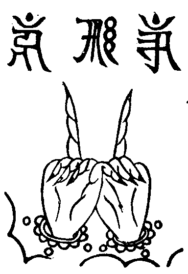
(此印呪出佛說大乘觀想曼拏囉下卷。想手印上。出金剛焰。遣境界魔。金剛頂經修習毗盧遮那三摩地法云。次以威怒降三世。淨治內外所生障。二羽交臂金剛拳。檀慧相鈎進力竪。行者想身發威熖。八臂四面竪利牙。震吼吽字如雷音。頂右回旋成結界)。
遣魔真言
唵斡資囉(二合)牙恰吽
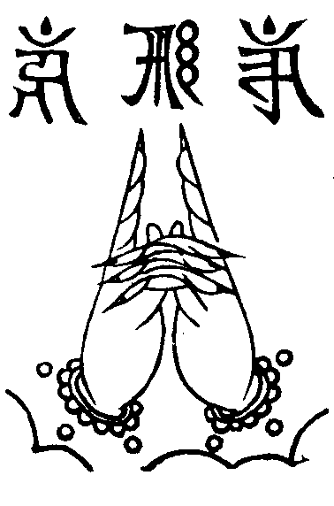
(二手外相义。二頭指直竪。結印當胷。手動似扇。印出火光。而遣諸魔)。
遣魔真言
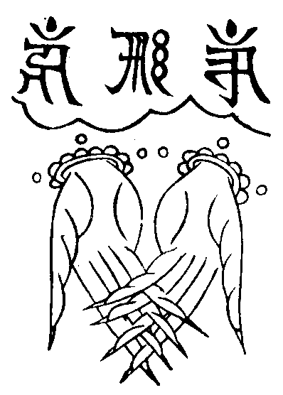
(二手內相义。十指仰上。結印當胷。想印中放出金剛焰。令諸魔遠離)。
真空呪印
(二手內相义。進禪力智直竪念真言)。
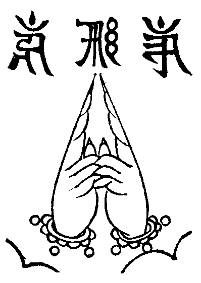
唵莎癹斡順牙(二合)薩哩斡(二合)答哩麻(二合)莎癹斡順牙(二合)達(二合)
(侍者白云)于空性中想(阿闍黎觀想此梵書九字)[口*(隆-一)][口*(隆-一)](二合)bhrūṃ [口*普][口*(隆-一)](二合)bhrūṃ [口*普][口*(隆-一)](二合)bhrūṃ 啞啞啞āḥ 吽吽hūṃ (此下眾和)吽而成十方世界所有天妙曼怛啞哩干濯足花香燈塗食樂。清徹無礙。猶如普賢化現。種種雲集供養。徧滿虗空。充塞法界。盡輪迴際。無有間斷。
(二手內相义。進力禪智直竪。大毗盧遮那成佛神變加持經第四云。由結此印誦真言故。其壇中諸佛菩薩。及諸聖眾。量同虗空。徧周法界。成報土佛剎。佛說一切如來金剛三業最上秘密大教王經第二云。當觀想勃籠字。即成虗空金剛心曼拏囉。一切金剛周匝圍繞。故云于空性中等。大威怒烏芻儀軌云。當奉閼伽香水器浴聖眾足。故云啞哩干濯足。此中皆是無礙報土不思議境界。故云猶如普賢等。勃籠bhrūṃ 字即[口*普][口*(隆-一)]。唐言佛寶閣)。
唵薩哩斡(二合)答塔葛達薩叭哩咓囉(啞哩干巴 丹)巴囉(二合)諦拶耶莎訶
五供養
唵薩哩斡(二合)答塔葛達薩叭哩咓囉
唵斡資囉(二合)不思必啞吽
唵斡資囉(二合)捨不答布拶彌渴薩謨的囉(二合)斯癹囉納三麻耶啞吽
唵薩哩斡(二合)答塔葛達薩叭哩咓囉
唵斡資囉(二合)度必啞吽
唵斡資囉(二合)捨不答布拶彌渴薩謨的囉(二合)斯癹囉納三麻耶啞吽
唵薩哩斡(二合)答塔葛達薩叭哩咓囉
唵斡資囉(二合)啞嚕吉啞吽
唵斡資囉(二合)捨不答布拶彌渴薩謨的囉(二合)斯癹囉納三麻耶啞吽
唵薩哩斡(二合)答塔葛達薩叭哩咓囉
唵斡資囉(二合)干底啞吽
唵斡資囉(二合)捨不答布拶彌渴薩謨的囉(二合)斯癹囉納三麻耶啞吽
唵薩哩斡(二合)答塔葛達薩叭哩咓囉
唵斡資囉(二合)你微的啞吽
唵斡資囉(二合)捨不答布拶彌渴薩謨的囉(二合)斯癹囉納三麻耶啞吽
音樂呪
唵斡資囉(二合)看支夷囉納(二合)囉納(二合)不囉(二合)囉納不囉(二合)囉納三不囉(二合)囉納三不囉(二合)囉納薩哩斡(二合)孛塔赤的囉(二合)不羅拶哩答麻曷不囉(二合)尼牙(二合)巴囉蔑答那達速巴微薩哩斡(二合)塔哩麻(二合)[口*紇]哩(二合)達耶傘多沙納葛哩吽吽和和啞龕莎訶
(至此不特唯心變現。而且轉成受用報土。不思議供養。故與前不可)。
十二因緣呪
(阿闍黎持花米誦云)。
唵耶答兒麻(二合)兮都不囉(二合)巴斡兮敦的山答塔葛達歇斡怛的山拶約尼嚕怛耶[口*邦]叭諦麻曷釋囉(二合)麻納耶莎訶
唵(一)(引)啞(二)(引)吽(三)(引)(念三遍就撒花米。持鈴念曼拏囉偈)
(密呪圓因集云。凡修功德。誦此慶成)。
曼拏囉偈
諦想清淨廣大曼拏囉 四洲充滿無量諸珍寶
一一皆如玅高摩尼聚 奉獻上師三寶願安住
曼拏囉真言
唵薩哩斡(二合)答塔葛答囉的捺(二合)麻曷曼答辣布拶彌渴薩謨的囉(二合)斯癹囉納三麻耶啞吽
∴寶山寶海妙寶座 天衣瓔珞如意樹
寶池妙花香燈塗 周徧法界滿虗空
∴寶珠自性廣大海 七寶之中最殊勝
獻如雲聚妙寶供 我今虔誠而奉獻
∴中央八峯須彌盧 四大部洲諸形相
以日月等而圍遶 黃金白銀與寶玉
∴麻薩葛斡及琉璃 赤珠乃至石心等
奉獻上師三寶尊 唯願慈悲哀納受
唵薩哩斡(二合)答塔葛達囉的捺(二合)麻曷曼答辣布拶彌渴薩謨的囉(二合)斯癹囉納三麻耶啞吽
(此以報土妙曼拏囉。及妙供具。總献上師三寶)。
∴我今依教建立曼拏囉 量等虗空金剛為寶地
字字密言惟心之所成 須彌日月七寶四天下
∴衣服傘盖伎樂幢幡雲 寶座珍羞樓閣并宮殿
池沼園林名花普徧布 奉獻上師三寶護神等
∴惟願慈悲納受生歡悅 屏除魔礙集福施安寧
今宵施主所求皆如意 盡未來際吉祥無間斷
(佛說瑜伽大教王經云。右手持金剛杵。左手振金剛鈴。即以歌贊供養賢聖。如是依金剛大乘。作最上真實供養已。諸佛賢聖。悉皆歡喜。此是結撮回向。再念奉献真言)。
唵薩哩斡(二合)答塔葛達囉的捺(二合)麻曷曼答辣布拶彌渴薩謨的囉(二合)斯癹囉納三麻耶啞吽(手持花米上舉誦之)惟願上師三寶。中圍佛會。慈悲攝授。今辰施主。福慧莊嚴。世出世間。吉祥如意。普及法界。一切有情。速成無上。佛果菩提
捺謨孤嚕(二合)毗耶 捺謨勃塔耶
捺謨達而麻耶 捺謨桑渴耶
唵(一)(引)啞(二)(引)吽(三)(引)
(阿闍黎于此親見中圍佛會。故自皈依已。復勸大眾發心。十八會經初會中。有為弟子授速證菩薩地法)。
三歸依讚
佛法僧寶。體徧十方。恭敬請祈。必蒙感應。將當闡揚施食之初。先須歸敬三寶。要祈法事周隆。庶使勝因成就。大眾虔誠。隨聲應和。
志心信禮佛陀耶兩足尊。三覺圓。萬德具。天人調御師(唵啞吽)。凡聖大慈父。從真界。騰應質。悲化普。竪窮三際時。橫徧十方。處震法雷。鳴法鼓。廣演權實教(唵啞吽)。大開方便路。若歸依。能消滅地獄苦。
志心信禮達磨耶離欲尊。寶藏收王。凾貯。結集于西域(唵啞吽)。飜譯傳東士。祖師弘。賢哲判。成章疏。三乘分頓漸。五教定宗趣。鬼神欽。龍天護。導迷標月指(唵啞吽)。除熱真甘露。若歸依。能消滅餓鬼苦。
志心信禮僧伽耶眾中尊。五德師。六和侶。利生為事業(唵啞吽)。弘法是家務。避囂塵。常晏坐。寂靜處。遮身服毳衣。充腹採薪薇。鉢降龍。錫解虎。法燈常徧照(唵啞吽)。祖印相傳付。若歸依。能消滅旁生苦。
∴三寶聖眾垂加護
眾等發廣大心
(皈依金剛上師句下眾和)。
歸依金剛上師。歸依佛。歸依法。歸依僧。我今發心。不為自求人天福報。聲聞緣覺。乃至權乘諸位菩薩。唯依最上乘發菩提心。願與法界眾生。一時同得阿耨多羅三藐三菩提心。
先結大輪明王印 加持壇場悉清淨
我今依教誦密言 令我所作皆成就
默念大輪明王呪七遍
(金剛頂略出念誦經四種念誦。一音聲念誦。一切聲是也。二金剛念誦。合口動舌。默念是也。三三摩地念誦。心念是也。四真實念誦。如字義修行是也。佛說秘密相經云。若持誦時。不動舌端。唇齒相合。離諸音聲。但以金剛語音而為持誦。即能成就一切儀軌)。
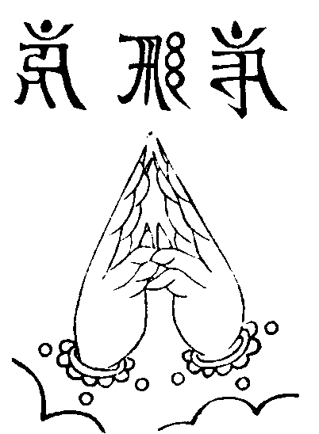
捺麻斯得哩(二合)野脫夷(二合)葛喃薩哩斡(二合)怛塔葛達喃唵微囉積微囉積麻曷拶葛囉(二合)斡資哩(二合)斡資哩(二合)薩怛薩怛薩囉諦薩囉諦得囉(二合)夷得囉(二合)夷微馱麻尼(二合)三攀拶納禰得囉(二合)麻禰的席塔[口*紇]哩(二合)得蘭(二合)顏席提脫夷(二合)莎訶
(甘露軍茶利儀軌云。二手內相义。進力並伸直。忍願纏進力初節前。各以峯相拄。禪智並伸直。又云。應結金剛輪菩薩印。誦密語。以入曼拏囉者。受得三世無障礙。三種菩薩律儀。由入曼拏囉。身心備十微塵剎世界。微塵數三昧耶。無作戒禁。或因屈伸俯仰。發言吐氣。起心動念。廢忘菩提之心。退失善根。以此印契密言。殊勝方便。誦持作意。能除違犯愆咎。三昧耶如故。倍加光顯。能淨身口意故。則成入一切曼拏囉。獲得灌頂三摩耶。唐沙門慧日云。有人未曾經和尚阿闍黎入大曼茶囉壇場者。但寬取大輪明王金剛呪。誦二十一遍。即當入壇。然後作諸呪法。悉得成就。又云。誦密言時。作是觀想。盡虗空。徧法界。三界生死。六趣有情。速得入金剛界大曼拏囉等。同金剛薩埵大菩薩)。
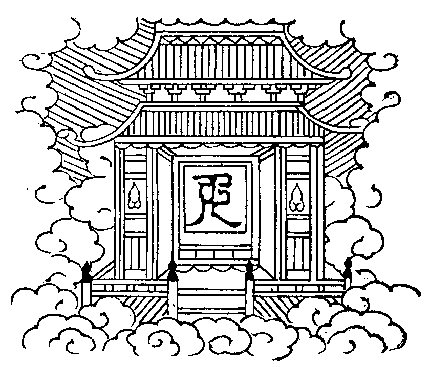
(師印呪可知。應想面前空處。離身七肘高八肘。現一金色[口*普][口*(隆-一)](二合)bhrūṃ 字種。變成勝妙宮殿。以大千國土。合為一國土。以此國土。融成一宮殿。一一莊嚴。皆准華嚴經說。勝妙。樂事。問。此大千國土。合而為一。云何合耶。答。一切國土。體自空寂。誰立彊界。若離眾生。見則國土自一。問。此土眾生。置于何處。答。自中眾生。即諸佛心中之眾生。同佛受用。復何用置。問。何全依心想。便成宮殿。答。彼大千國土等。咸是妙明真心所現若離真心。畢竟無有。全依幻化力故。復以大千國土而為宮殿。是為萬法而由我者也)。
歸命十方調御師 演揚清淨微玅法
三乘四果解脫僧 願賜慈悲臨法會
奉請三寶
(表白和香花迎香花請阿闍黎執罏三請)。
南無一心奉請。盡十方。徧法界。微塵剎土中。諸佛法僧。金剛密跡。衛法神王。天龍八部。婆羅門仙。一切聖眾。惟願。不違本誓。憐愍有情。此夜今時。光臨法會。
(此夜今時句。儀軌經無。斯三寶等。屬變化土。將欲下化。故特奉請。請畢。阿闍黎合掌白云)。
印現壇儀
(千手眼修行儀云。二手各作金剛拳。施進慧力相鈎。胷前微動。誦真言曰)。
唵斡資囉(二合)拶裓囉(二合)吽[口*邦]斛
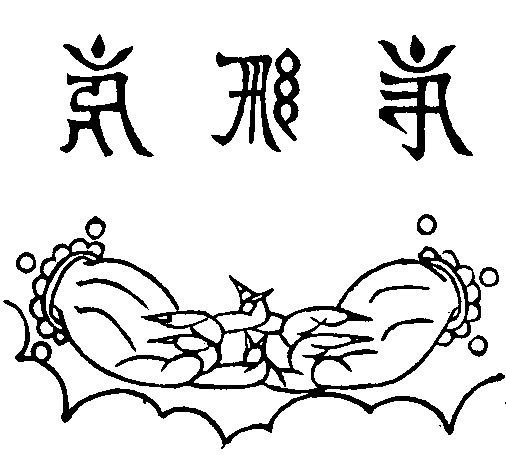
(師印呪可知。應想心間字種放光。至色究竟天上。召請智觀世音。來入道場。此智觀世音。即放無量光。召請一切三寶。及顯密護神。來至道場。重重無盡。問。于此教門。但說果主因伴。今何得因為主。果為伴耶。答。此有二義。一。行者以觀音為所緣熟境。故先契此境。後契諸佛之境。然觀音放光召請諸佛。亦猶行者召請觀音者也。今藉觀音請佛。非為主也。二。此菩薩。即是過去威德自在光明王如來退位度生。即果位也。若或為主。亦無過也建壇儀云。若無壇佛。應結纔發意轉法輪印。印現壇儀。千手眼觀自在儀軌云。二手各作金剛拳。進力檀慧相鈎結。又云。即結纔發意轉法輪菩薩印。以印置于身前。壇上即成蓮花部徧調伏大曼拏囉。以印安于心上。即自身成大曼拏囉。以印觸本尊像等。皆成大曼拏囉。以印置身前空中。即滿虗空界。成大曼拏囉。行者設有越法。悞失三業。破三昧耶戒。由結此印。誦真言。加持故。能除諸過。皆得圓滿。然後恭申情旨)。
羅列香花建寶壇 重重佛境一毫端
心融妙理虗空小 道契真如法界寬
相好慈悲秋月滿 化身騰處暮雲繁
香烟堆裡瞻應現 萬象森羅海印含
釋迦如來 證明功德
彌陀如來 慈悲攝授
觀世音菩薩 密垂加護
阿難陀尊者 興權啟教
香雲蓋
(至此宣疏畢或執手罏表白擊引磬念三十五佛聲宜和緩或用鐘鼓同眾念大懺悔)。
懺悔師。
瑜伽燄口註集纂要卷上